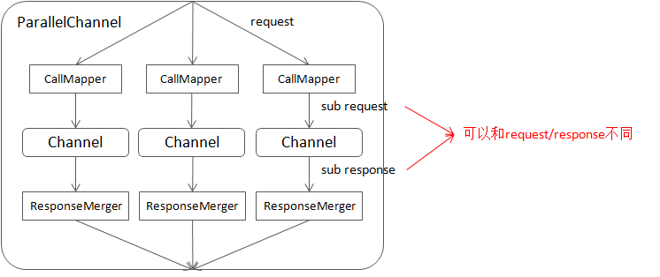

随着服务规模的增大，对下游的访问流程会越来越复杂，其中往往包含多个同时发起的 RPC 或有复杂的层次结构。但这类代码的多线程陷阱很多，用户可能写出了 bug 也不自知，复现和调试也比较困难。而且实现要么只能支持同步的情况，要么得为异步重写一套。
以”在多个异步 RPC 完成后运行一些代码”为例：它的同步实现一般是异步地发起多个 RPC，然后逐个等待各自完成；它的异步实现一般是用一个带计数器的回调，每当一个 RPC 完成时计数器减一，直到 0 时调用回调。可以看到这类实现有不少缺点。
我们需要更好的抽象。如果我们能以不同的方式把一些 Channel 组合为更大的 Channel，并把不同的访问模式置入其中，那么用户可以使用统一接口完成同步、异步、取消等操作。这种 channel 在 brpc 中被称为组合 channel。
ParallelChannel
ParallelChannel（有时被称为”pchan”）同时访问其包含的 sub channel，并合并它们的结果。用户可通过 CallMapper 修改请求，通过 ResponseMerger 合并结果。ParallelChannel 看起来就像是一个普通的 Channel，示例代码见 example/parallel_echo_c++。
任何 brpc::ChannelBase 的子类都可以加入 ParallelChannel，包括 ParallelChannel 和其他组合 Channel。用户可以设置 ParallelChannelOptions.fail_limit 来控制访问的最大失败次数，当失败的访问达到这个数目时，RPC 会立刻结束而不等待超时。
一个 sub channel 可多次加入同一个 ParallelChannel。当你需要对同一个服务发起多次异步访问并等待它们完成的话，这很有用。
ParallelChannel 的内部结构大致如下：

可通过如下接口把 sub channel 插入 ParallelChannel：
int AddChannel(brpc::ChannelBase* sub_channel,
ChannelOwnership ownership,
CallMapper* call_mapper,
ResponseMerger* response_merger);当 ownership 为 brpc::OWNS_CHANNEL 时，sub_channel 会在 ParallelChannel 析构时被删除。一个 sub channel 可能会多次加入一个 ParallelChannel，如果其中一个指明了 ownership 为 brpc::OWNS_CHANNEL，那个 sub channel 会在 ParallelChannel 析构时被最多删除一次。
访问 ParallelChannel 时调用 AddChannel 是线程不安全的。
CallMapper
CallMapper 用于把对 ParallelChannel 的调用转化为对 sub channel 的调用。如果 call_mapper 是 NULL，sub channel 的请求就是 ParallelChannel 的请求，而 response 则 New() 自 ParallelChannel 的 response。如果 call_mapper 不为 NULL，则会在 ParallelChannel 析构时被删除。call_mapper 内含引用计数，一个 call_mapper 可与多个 sub channel 关联。
class CallMapper {
public:
virtual ~CallMapper();
virtual SubCall Map(int channel_index/*starting from 0*/,
const google::protobuf::MethodDescriptor* method,
const google::protobuf::Message* request,
google::protobuf::Message* response) = 0;
};- channel_index：该 sub channel 在 ParallelChannel 中的位置，从 0 开始计数。
- method/request/response：ParallelChannel.CallMethod() 的参数。
返回的 SubCall 被用于访问对应的 sub channel。SubCall 有两个特殊值，其中之一是 SubCall::Bad()，返回后该次访问会立刻失败。
常见的 Map() 实现有：
class Broadcaster : public CallMapper {
public:
SubCall Map(int channel_index/*starting from 0*/,
const google::protobuf::MethodDescriptor* method,
const google::protobuf::Message* request,
google::protobuf::Message* response) {
// method/request和pchan保持一致.
// response是new出来的，最后的flag告诉pchan在RPC结束后删除Response。
return SubCall(method, request, response->New(), DELETE_RESPONSE);
}
};class ModifyRequest : public CallMapper {
public:
SubCall Map(int channel_index/*starting from 0*/,
const google::protobuf::MethodDescriptor* method,
const google::protobuf::Message* request,
google::protobuf::Message* response) {
FooRequest* copied_req = brpc::Clone<FooRequest>(request);
copied_req->set_xxx(...);
// 拷贝并修改request，最后的flag告诉pchan在RPC结束后删除Request和Response。
return SubCall(method, copied_req, response->New(), DELETE_REQUEST | DELETE_RESPONSE);
}
};class UseFieldAsSubRequest : public CallMapper {
public:
SubCall Map(int channel_index/*starting from 0*/,
const google::protobuf::MethodDescriptor* method,
const google::protobuf::Message* request,
google::protobuf::Message* response) {
if (channel_index >= request->sub_request_size()) {
// sub_request不够，说明外面准备数据的地方和pchan中sub channel的个数不符.
// 返回Bad()让该次访问立刻失败
return SubCall::Bad();
}
// 取出对应的sub request，增加一个sub response，最后的flag为0告诉pchan什么都不用删
return SubCall(sub_method, request->sub_request(channel_index), response->add_sub_response(), 0);
}
};ResponseMerger
response_merger 把 sub channel 的 response 合并入总的 response。其为 NULL 时，则使用 response->MergeFrom(*sub_response)，MergeFrom 的行为可概括为”除了合并 repeated 字段，其余都是覆盖”。如果你需要更复杂的行为，则需实现 ResponseMerger。
response_merger 是一个个执行的，所以你并不需要考虑多个 Merge 同时运行的情况。response_merger 在 ParallelChannel 析构时被删除。response_merger 内含引用计数，一个 response_merger 可与多个 sub channel 关联。
访问 sub channel 的细节
有时访问者需要了解访问 sub channel 时的细节，通过 Controller.sub(i) 可获得访问 sub channel 的 controller：
// Get the controllers for accessing sub channels in combo channels.
// Ordinary channel:
// sub_count() is 0 and sub() is always NULL.
// ParallelChannel/PartitionChannel:
// sub_count() is #sub-channels and sub(i) is the controller for
// accessing i-th sub channel inside ParallelChannel, if i is outside
// [0, sub_count() - 1], sub(i) is NULL.
// NOTE: You must test sub() against NULL, ALWAYS. Even if i is inside
// range, sub(i) can still be NULL:
// * the rpc call may fail and terminate before accessing the sub channel
// * the sub channel was skipped
// SelectiveChannel/DynamicPartitionChannel:
// sub_count() is always 1 and sub(0) is the controller of successful
// or last call to sub channels.
int sub_count() const;
const Controller* sub(int index) const;SelectiveChannel
SelectiveChannel（有时被称为”schan”）按负载均衡算法访问其包含的 Channel，相比普通 Channel 它更加高层：把流量分给 sub channel，而不是具体的 Server。SelectiveChannel 主要用来支持机器组之间的负载均衡，它具备 Channel 的主要属性。示例代码见 example/selective_echo_c++。
任何 brpc::ChannelBase 的子类都可加入 SelectiveChannel，包括 SelectiveChannel 和其他组合 Channel。
SelectiveChannel 的重试独立于其中的 sub channel，当 SelectiveChannel 访问某个 sub channel 失败后（本身可能重试），它会重试另外一个 sub channel。
目前 SelectiveChannel 要求 request 必须在 RPC 结束前有效，其他 channel 没有这个要求。如果你使用 SelectiveChannel 发起异步操作，确保 request 在 done 中才被删除。
SelectiveChannel 的初始化和普通 Channel 基本一样，但 Init 不需要指定命名服务，因为 SelectiveChannel 通过 AddChannel 动态添加 sub channel，而普通 Channel 通过命名服务动态管理 server：
#include <brpc/selective_channel.h>
...
brpc::SelectiveChannel schan;
brpc::ChannelOptions schan_options;
schan_options.timeout_ms = ...;
schan_options.backup_request_ms = ...;
schan_options.max_retry = ...;
if (schan.Init(load_balancer, &schan_options) != 0) {
LOG(ERROR) << "Fail to init SelectiveChannel";
return -1;
}初始化完毕后通过 AddChannel 加入 sub channel：
if (schan.AddChannel(sub_channel, NULL/*ChannelHandle*/) != 0) { // 第二个参数ChannelHandle用于删除sub channel，不用删除可填NULL
LOG(ERROR) << "Fail to add sub_channel";
return -1;
}提示：访问 SelectiveChannel 的方式和普通 Channel 是一样的。
向多个命名服务分流
一些场景中我们需要向多个命名服务下的机器分流，这都可以通过 SelectiveChannel 完成。
下面的代码创建了一个 SelectiveChannel，并插入三个访问不同 bns 的普通 Channel：
brpc::SelectiveChannel channel;
brpc::ChannelOptions schan_options;
schan_options.timeout_ms = FLAGS_timeout_ms;
schan_options.max_retry = FLAGS_max_retry;
if (channel.Init("c_murmurhash", &schan_options) != 0) {
LOG(ERROR) << "Fail to init SelectiveChannel";
return -1;
}
for (int i = 0; i < 3; ++i) {
brpc::Channel* sub_channel = new brpc::Channel;
if (sub_channel->Init(ns_node_name[i], "rr", NULL) != 0) {
LOG(ERROR) << "Fail to init sub channel " << i;
return -1;
}
if (channel.AddChannel(sub_channel, NULL/*handle for removal*/) != 0) {
LOG(ERROR) << "Fail to add sub_channel to channel";
return -1;
}
}
...
XXXService_Stub stub(&channel);
stub.FooMethod(&cntl, &request, &response, NULL);
...PartitionChannel
PartitionChannel 是特殊的 ParallelChannel，它会根据命名服务中的 tag 自动建立对应分库的 sub channel。这样用户就可以把所有的分库机器挂在一个命名服务内，通过 tag 来指定哪台机器对应哪个分库。示例代码见 example/partition_echo_c++。
PartitionChannel 只能处理一种分库方法。当用户需要多种分库方法共存，或从一个分库方法平滑地切换为另一种分库方法时，可以使用 DynamicPartitionChannel，它会根据不同的分库方式动态地建立对应的 sub PartitionChannel，并根据容量把请求分配给不同的分库。示例代码见 example/dynamic_partition_echo_c++。
如果分库在不同的命名服务内，那么用户得自行用 ParallelChannel 组装，即每个 sub channel 对应一个分库（使用不同的命名服务），ParallelChannel 的使用方法见上文。
定制 PartitionParser
首先定制 PartitionParser。这个例子中 tag 的形式是 N/M，N 代表分库的 index，M 是分库的个数，比如 0/3 代表一共 3 个分库，这是第一个：
#include <brpc/partition_channel.h>
...
class MyPartitionParser : public brpc::PartitionParser {
public:
bool ParseFromTag(const std::string& tag, brpc::Partition* out) {
// "N/M" : #N partition of M partitions.
size_t pos = tag.find_first_of('/');
if (pos == std::string::npos) {
LOG(ERROR) << "Invalid tag=" << tag;
return false;
}
char* endptr = NULL;
out->index = strtol(tag.c_str(), &endptr, 10);
if (endptr != tag.data() + pos) {
LOG(ERROR) << "Invalid index=" << butil::StringPiece(tag.data(), pos);
return false;
}
out->num_partition_kinds = strtol(tag.c_str() + pos + 1, &endptr, 10);
if (endptr != tag.c_str() + tag.size()) {
LOG(ERROR) << "Invalid num=" << tag.data() + pos + 1;
return false;
}
return true;
}
};初始化 PartitionChannel
#include <brpc/partition_channel.h>
...
brpc::PartitionChannel channel;
brpc::PartitionChannelOptions options;
options.protocol = ...; // PartitionChannelOptions继承了ChannelOptions，后者有的前者也有
options.timeout_ms = ...; // 同上
options.fail_limit = 1; // PartitionChannel自己的选项，意思同ParallelChannel中的fail_limit。这里为1的意思是只要有1个分库访问失败，这次RPC就失败了。
if (channel.Init(num_partition_kinds, new MyPartitionParser(),
server_address, load_balancer, &options) != 0) {
LOG(ERROR) << "Fail to init PartitionChannel";
return -1;
}
// 访问方法和普通Channel是一样的DynamicPartitionChannel
DynamicPartitionChannel 的使用方法和 PartitionChannel 基本上是一样的：先定制 PartitionParser 再初始化，但 Init 时不需要 num_partition_kinds，因为 DynamicPartitionChannel 会为不同的分库方法动态建立不同的 sub PartitionChannel。
下面演示一下使用 DynamicPartitionChannel 平滑地从 3 库变成 4 库。
启动 3 分库的 server
首先分别在 8004、8005、8006 端口启动三个 server：
$ ./echo_server -server_num 3
TRACE: 09-06 10:40:39: * 0 server.cpp:159] EchoServer is serving on port=8004
TRACE: 09-06 10:40:39: * 0 server.cpp:159] EchoServer is serving on port=8005
TRACE: 09-06 10:40:39: * 0 server.cpp:159] EchoServer is serving on port=8006
TRACE: 09-06 10:40:40: * 0 server.cpp:192] S[0]=0 S[1]=0 S[2]=0 [total=0]
TRACE: 09-06 10:40:41: * 0 server.cpp:192] S[0]=0 S[1]=0 S[2]=0 [total=0]
TRACE: 09-06 10:40:42: * 0 server.cpp:192] S[0]=0 S[1]=0 S[2]=0 [total=0]启动后每个 Server 每秒会打印上一秒收到的流量，目前都是 0。
在本地启动使用 DynamicPartitionChannel 的 Client，初始化代码如下：
...
brpc::DynamicPartitionChannel channel;
brpc::PartitionChannelOptions options;
// 访问任何分库失败都认为RPC失败。调大这个数值可以使访问更宽松，比如等于2的话表示至少两个分库失败才算失败。
options.fail_limit = 1;
if (channel.Init(new MyPartitionParser(), "file://server_list", "rr", &options) != 0) {
LOG(ERROR) << "Fail to init channel";
return -1;
}
...命名服务 file://server_list 的内容是：
0.0.0.0:8004 0/3 # 表示3分库中的第一个分库，其他依次类推
0.0.0.0:8004 1/3
0.0.0.0:8004 2/33 分库方案的 3 个库都在 8004 端口对应的 server 上。启动 Client 后 Client 发现了 8004，并向其发送流量：
$ ./echo_client
TRACE: 09-06 10:51:10: * 0 src/brpc/policy/file_naming_service.cpp:83] Got 3 unique addresses from `server_list'
TRACE: 09-06 10:51:10: * 0 src/brpc/socket.cpp:779] Connected to 0.0.0.0:8004 via fd=3 SocketId=0 self_port=46544
TRACE: 09-06 10:51:11: * 0 client.cpp:226] Sending EchoRequest at qps=132472 latency=371
TRACE: 09-06 10:51:12: * 0 client.cpp:226] Sending EchoRequest at qps=132658 latency=370
TRACE: 09-06 10:51:13: * 0 client.cpp:226] Sending EchoRequest at qps=133208 latency=369同时 Server 端收到了 3 倍的流量，因为访问一次 Client 端要访问三次 8004，分别对应每个分库：
TRACE: 09-06 10:51:11: * 0 server.cpp:192] S[0]=398866 S[1]=0 S[2]=0 [total=398866]
TRACE: 09-06 10:51:12: * 0 server.cpp:192] S[0]=398117 S[1]=0 S[2]=0 [total=398117]
TRACE: 09-06 10:51:13: * 0 server.cpp:192] S[0]=398873 S[1]=0 S[2]=0 [total=398873]加入 4 分库的 server
开始修改分库，在 server_list 中加入 4 分库的 8005：
0.0.0.0:8004 0/3
0.0.0.0:8004 1/3
0.0.0.0:8004 2/3
0.0.0.0:8005 0/4
0.0.0.0:8005 1/4
0.0.0.0:8005 2/4
0.0.0.0:8005 3/4观察 Client 和 Server 的输出变化。Client 端发现了 server_list 的变化并重新载入，但 qps 并没有什么变化：
TRACE: 09-06 10:57:10: * 0 src/brpc/policy/file_naming_service.cpp:83] Got 7 unique addresses from `server_list'
TRACE: 09-06 10:57:10: * 0 src/brpc/socket.cpp:779] Connected to 0.0.0.0:8005 via fd=7 SocketId=768 self_port=39171
TRACE: 09-06 10:57:11: * 0 client.cpp:226] Sending EchoRequest at qps=135346 latency=363
TRACE: 09-06 10:57:12: * 0 client.cpp:226] Sending EchoRequest at qps=134201 latency=366
TRACE: 09-06 10:57:13: * 0 client.cpp:226] Sending EchoRequest at qps=137627 latency=356
TRACE: 09-06 10:57:14: * 0 client.cpp:226] Sending EchoRequest at qps=136775 latency=359
TRACE: 09-06 10:57:15: * 0 client.cpp:226] Sending EchoRequest at qps=139043 latency=353server 端的变化比较大：8005 收到了流量，并且和 8004 的流量比例关系约为 4:3：
TRACE: 09-06 10:57:09: * 0 server.cpp:192] S[0]=398597 S[1]=0 S[2]=0 [total=398597]
TRACE: 09-06 10:57:10: * 0 server.cpp:192] S[0]=392839 S[1]=0 S[2]=0 [total=392839]
TRACE: 09-06 10:57:11: * 0 server.cpp:192] S[0]=334704 S[1]=83219 S[2]=0 [total=417923]
TRACE: 09-06 10:57:12: * 0 server.cpp:192] S[0]=206215 S[1]=273873 S[2]=0 [total=480088]
TRACE: 09-06 10:57:13: * 0 server.cpp:192] S[0]=204520 S[1]=270483 S[2]=0 [total=475003]
TRACE: 09-06 10:57:14: * 0 server.cpp:192] S[0]=207055 S[1]=273725 S[2]=0 [total=480780]
TRACE: 09-06 10:57:15: * 0 server.cpp:192] S[0]=208453 S[1]=276803 S[2]=0 [total=485256]一次 RPC 要访问三次 8004 或四次 8005，8004 和 8005 流量比是 3:4，说明 Client 以 1:1 的比例访问了 3 分库和 4 分库。这个比例关系取决于其容量，容量的计算是递归的。在这儿的场景中，3 分库和 4 分库的容量都是 1，因为所有的 3 库都在 8004 一台 server 上，所有的 4 库都在 8005 一台 server 上。
在 4 分库方案中加入 8006 端口的 server：
0.0.0.0:8004 0/3
0.0.0.0:8004 1/3
0.0.0.0:8004 2/3
0.0.0.0:8005 0/4
0.0.0.0:8005 1/4
0.0.0.0:8005 2/4
0.0.0.0:8005 3/4
0.0.0.0:8006 0/4
0.0.0.0:8006 1/4
0.0.0.0:8006 2/4
0.0.0.0:8006 3/4Client 的变化仍旧不大：
TRACE: 09-06 11:11:51: * 0 src/brpc/policy/file_naming_service.cpp:83] Got 11 unique addresses from `server_list'
TRACE: 09-06 11:11:51: * 0 src/brpc/socket.cpp:779] Connected to 0.0.0.0:8006 via fd=8 SocketId=1280 self_port=40759
TRACE: 09-06 11:11:51: * 0 client.cpp:226] Sending EchoRequest at qps=131799 latency=372
TRACE: 09-06 11:11:52: * 0 client.cpp:226] Sending EchoRequest at qps=136217 latency=361
TRACE: 09-06 11:11:53: * 0 client.cpp:226] Sending EchoRequest at qps=133531 latency=368
TRACE: 09-06 11:11:54: * 0 client.cpp:226] Sending EchoRequest at qps=136072 latency=361Server 端可以看到 8006 收到了流量，三台 server 的流量比例约为 3:4:4。这是因为 3 分库的容量仍为 1，而 4 分库由于 8006 的加入变成了 2，3 分库和 4 分库的流量比例是 3:8。4 分库中的每个分库在 8005 和 8006 上都有实例，同一个分库的不同实例使用 round robin 分流，所以 8005 和 8006 平摊了流量，最后的效果就是 3:4:4：
TRACE: 09-06 11:11:51: * 0 server.cpp:192] S[0]=199625 S[1]=263226 S[2]=0 [total=462851]
TRACE: 09-06 11:11:52: * 0 server.cpp:192] S[0]=143248 S[1]=190717 S[2]=159756 [total=493721]
TRACE: 09-06 11:11:53: * 0 server.cpp:192] S[0]=133003 S[1]=178328 S[2]=178325 [total=489656]
TRACE: 09-06 11:11:54: * 0 server.cpp:192] S[0]=135534 S[1]=180386 S[2]=180333 [total=496253]下线 3 分库的 server
尝试去掉 3 分库中的一个分库（你可以在 file://server_list 中使用 # 注释一行）：
0.0.0.0:8004 0/3
0.0.0.0:8004 1/3
#0.0.0.0:8004 2/3
0.0.0.0:8005 0/4
0.0.0.0:8005 1/4
0.0.0.0:8005 2/4
0.0.0.0:8005 3/4
0.0.0.0:8006 0/4
0.0.0.0:8006 1/4
0.0.0.0:8006 2/4
0.0.0.0:8006 3/4Client 端发现了这点：
TRACE: 09-06 11:17:47: * 0 src/brpc/policy/file_naming_service.cpp:83] Got 10 unique addresses from `server_list'
TRACE: 09-06 11:17:47: * 0 client.cpp:226] Sending EchoRequest at qps=131653 latency=373
TRACE: 09-06 11:17:48: * 0 client.cpp:226] Sending EchoRequest at qps=120560 latency=407
TRACE: 09-06 11:17:49: * 0 client.cpp:226] Sending EchoRequest at qps=124100 latency=395
TRACE: 09-06 11:17:50: * 0 client.cpp:226] Sending EchoRequest at qps=123743 latency=397Server 端更明显，8004 很快没有了流量。这是因为去掉的分库已经是 3 分库中最后的 2/3 分库，去掉后 3 分库的容量变为了 0，导致 8004 分不到任何流量了：
TRACE: 09-06 11:17:47: * 0 server.cpp:192] S[0]=130864 S[1]=174499 S[2]=174548 [total=479911]
TRACE: 09-06 11:17:48: * 0 server.cpp:192] S[0]=20063 S[1]=230027 S[2]=230098 [total=480188]
TRACE: 09-06 11:17:49: * 0 server.cpp:192] S[0]=0 S[1]=245961 S[2]=245888 [total=491849]
TRACE: 09-06 11:17:50: * 0 server.cpp:192] S[0]=0 S[1]=250198 S[2]=250150 [total=500348]在真实的线上环境中，我们会逐渐地增加 4 分库的 server，同时下掉 3 分库中的 server。DynamicPartitionChannel 会按照每种分库方式的容量动态切分流量。当某个时刻 3 分库的容量变为 0 时，我们便平滑地把 Server 从 3 分库变为了 4 分库，同时并没有修改 Client 的代码。